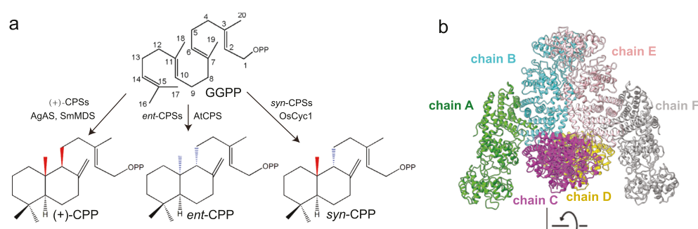

OsCPS4 (Q0JF02; also OsCPSsyn, OsCyc1, CYC1) is a chloroplast-targeted, class II diterpene cyclase that catalyzes the first committed cyclization of rice syn-labdane diterpenoid metabolism. It converts the universal C20 precursor (2E,6E,10E)-geranylgeranyl diphosphate (GGPP) into 9alpha-copalyl diphosphate (syn-copalyl diphosphate, syn-CPP/syn-CDP), EC 5.5.1.14 (PubMed:15255861, PubMed:15341631). The reaction is a proton-initiated bicyclization driven by the conserved DXDD motif (residues 365-368) acting with a Mg(2+) cofactor; this is an intramolecular cyclization of an isomerase/lyase type rather than a hydrolysis. syn-CPP is the dedicated branch-point intermediate committing GGPP flux to the syn-CPP-derived specialized (defensive) diterpenoids of rice - momilactones A/B and oryzalexin S - which is described as "the only known metabolic fate" for syn-CPP in rice. OsCPS4 is one arm of a metabolic branch point: a separate ent-CPP synthase branch (OsCPS1/OsCPS2) feeds gibberellins and ent-kaurene/oryzalexin/phytocassane phytoalexins, while the syn-CPP branch feeds momilactones and oryzalexin S. CPS4 sits within the rice momilactone biosynthetic gene cluster (MBGC) on chromosome 4, co-localized with downstream genes (KSL4, CYP99A2/A3, etc.). Its transcription is strongly induced by UV irradiation and methyl jasmonate, the same conditions that elicit phytoalexin accumulation. OsCPS4 is therefore a biosynthetic ENZYME / pathway gatekeeper; its link to plant defense is indirect and mediated entirely through the antimicrobial/allelopathic PRODUCTS (phytoalexins) of the pathway it initiates. The protein localizes to the plastid (chloroplast, where the GGPP pool resides) per UniProt; oseme1-style direct localization for this protein was not found in the retrieved literature but is biochemically expected. 2023 X-ray/cryo-EM structural work on OsCyc1/OsCPS4 defined the active-site geometry underlying syn-stereochemistry and showed the enzyme is active independent of its dominant tetrameric oligomeric state.
| GO Term | Evidence | Action | Reason |
|---|---|---|---|
|
GO:0006952
defense response
|
IEA
GO_REF:0000043 |
MARK AS OVER ANNOTATED |
Summary: SPKW (GO_REF:0000043) annotation derived from the UniProt keyword "Plant defense"; snapshot-only, removed in the current GOA release. OsCPS4 is a syn-copalyl diphosphate synthase - a biosynthetic class II diterpene cyclase. Its connection to defense is via the antimicrobial/allelopathic diterpenoid PRODUCTS (momilactones, oryzalexin S) of the pathway it initiates, not via any direct defense-response activity of the enzyme itself.
Reason: GOA's removal of this annotation was JUSTIFIED. The keyword "Plant defense" reflects the well-established fact that the syn-CPP branch yields defensive phytoalexins, but mapping it to the broad biological-process term "defense response" (GO:0006952) attributes the protective role of the small-molecule products to the enzyme. This is the canonical phytoalexin-enzyme over-annotation pattern (cf. grape STS3 stilbene synthase in this subproject): the gene product is a metabolic enzyme that "catalyzes the committed step in biosynthesis of these natural products" [PMID:15255861], and "phytoalexins are diterpenoid secondary metabolites involved in the defense mechanism of the plant" (UniProt MISCELLANEOUS) - i.e. it is the products, not OsCPS4, that mediate defense. The function of OsCPS4 is precisely captured by the molecular function "syn-copalyl diphosphate synthase activity" (GO:0051498, retained, EXP) and, for the biological process, by a biosynthetic term - "phytoalexin biosynthetic process" (GO:0052315) and/or "diterpenoid biosynthetic process" (GO:0016102) - both proposed below as NEW/MODIFY targets. Disruption phenotypes are consistent with an indirect, product-mediated defense contribution that is also context/cultivar dependent (oscps4 knockdown shows increased blast susceptibility and reduced allelopathy in some backgrounds; loss of all syn-CPP-derived diterpenes), reinforcing that the defense relevance flows through the pathway products. The vague keyword-derived "defense response" term therefore adds no accurate functional information once the specific MF and biosynthetic-process terms are present, and its removal is appropriate.
Supporting Evidence:
PMID:15255861
the class II terpene synthase that converts the universal diterpenoid precursor geranylgeranyl diphosphate to syn-CPP catalyzes the committed step in biosynthesis of these natural products
file:ORYSJ/CPS4/CPS4-deep-research-falcon.md
OsCPS4-dependent metabolites have been linked to both **plant–microbe interactions** and **allelopathy** (chemical inhibition of neighboring plants).
file:ORYSJ/CPS4/CPS4-deep-research-falcon.md
feeding formation of **momilactones** and **oryzalexin S** (with strong biochemical pathway consensus) rather than functioning as a general diterpenoid enzyme for primary metabolism.
|
|
GO:0006721
terpenoid metabolic process
|
IEA
GO_REF:0000117 |
MODIFY |
Summary: ARBA machine-learning IEA assigning the broad process "terpenoid metabolic process". OsCPS4 genuinely acts in terpenoid metabolism (it cyclizes the C20 terpenoid GGPP), but the term is a high-level parent that captures neither the diterpenoid specificity nor the biosynthetic direction of the reaction.
Reason: The essence is correct - OsCPS4 is a terpenoid-metabolizing enzyme - but "terpenoid metabolic process" is over-general. OsCPS4 specifically performs a biosynthetic cyclization of a diterpenoid (C20) precursor, GGPP, to syn-CPP, the committed step toward the syn-labdane diterpenoids momilactones and oryzalexin S [PMID:15255861, PMID:15341631]. The more accurate and specific term is "diterpenoid biosynthetic process" (GO:0016102), which conveys both the C20/diterpenoid class and the biosynthetic direction. Recommend modifying to GO:0016102.
Proposed replacements:
diterpenoid biosynthetic process
Supporting Evidence:
PMID:15341631
OsCyc1 encodes syn-CDP synthase
file:ORYSJ/CPS4/CPS4-deep-research-falcon.md
For rice, **OsCPS4/OsCyc1** is the CPS responsible for producing the **syn** stereoisomer: **GGPP → syn-CPP**.
|
|
GO:0009507
chloroplast
|
IEA
GO_REF:0000044 |
ACCEPT |
Summary: IEA cellular-component annotation from the UniProt subcellular-location mapping. OsCPS4 carries a predicted N-terminal chloroplast transit peptide and is annotated by UniProt as a plastid (chloroplast) precursor; the same localization is independently supported by an IBA annotation to GO:0009507 (per the UniProt cross-reference set).
Reason: Consistent localization for a plastidial diterpenoid-biosynthesis enzyme: GGPP, the substrate, is produced in plastids, and labdane-related diterpenoid biosynthesis is plastid-associated. UniProt annotates Q0JF02 as "Plastid, chloroplast" with a TRANSIT (1..47) chloroplast transit peptide. The deep-research report notes that direct experimental confirmation of plastid localization for this specific protein was not found in the retrieved primary literature, but the database/transit-peptide support plus biochemical plausibility justify ACCEPT (this is also an IBA-supported term in the GO cross-reference set, indicating phylogenetic agreement).
Supporting Evidence:
file:ORYSJ/CPS4/CPS4-deep-research-falcon.md
OsCPS4 is annotated by UniProt as a **chloroplastic precursor**, consistent with plastidial GGPP-based diterpenoid biosynthesis
|
|
GO:0010333
terpene synthase activity
|
IEA
GO_REF:0000002 |
ACCEPT |
Summary: InterPro IEA (terpene-synthase-family domains) assigning "terpene synthase activity". OsCPS4 is a class II terpene synthase (diterpene cyclase) that cyclizes the linear C20 terpene precursor GGPP. The term is a correct, appropriately general functional grouping for this enzyme family.
Reason: Correct and useful as a family-level molecular function. GO:0010333 is defined as "Catalysis of the formation of cyclic terpenes through the cyclization of linear terpenes (e.g. ... geranylgeranyl-PP)", which exactly matches OsCPS4's class II cyclization of GGPP. It is the direct parent grouping for the specific MF "syn-copalyl diphosphate synthase activity" (GO:0051498, also annotated). Retaining the family-level term alongside the specific term is acceptable; both are accurate.
Supporting Evidence:
PMID:15255861
class II terpene synthases exhibit a sequence conservation pattern substantially different from that of the prototypical class I enzymes
file:ORYSJ/CPS4/CPS4-deep-research-falcon.md
encoding a **syn-copalyl diphosphate synthase** (class II diterpene cyclase) that converts **(E,E,E)-geranylgeranyl diphosphate (GGPP)** to **syn-copalyl diphosphate (syn-CPP)**.
|
|
GO:0016114
terpenoid biosynthetic process
|
IEA
GO_REF:0000002 |
MODIFY |
Summary: InterPro IEA assigning "terpenoid biosynthetic process". This correctly captures that OsCPS4 acts in terpenoid biosynthesis, but - like the ARBA "terpenoid metabolic process" annotation - it is more general than the diterpenoid (C20) class that OsCPS4 actually commits flux to.
Reason: The biosynthetic direction is right, but the term can be made more specific. OsCPS4 cyclizes a C20 diterpenoid precursor (GGPP) into syn-CPP, the committed intermediate of rice syn-labdane diterpenoid biosynthesis [PMID:15255861, PMID:15341631]. "Diterpenoid biosynthetic process" (GO:0016102), a child of GO:0016114, is the precise term. Recommend modifying to GO:0016102 (this also consolidates with the MODIFY proposed for the GO:0006721 ARBA annotation).
Proposed replacements:
diterpenoid biosynthetic process
Supporting Evidence:
PMID:15255861
the class II terpene synthase that converts the universal diterpenoid precursor geranylgeranyl diphosphate to syn-CPP catalyzes the committed step in biosynthesis of these natural products
file:ORYSJ/CPS4/CPS4-deep-research-falcon.md
This is repeatedly described as the defining entry point to the **syn-CPP branch** of rice labdane-related diterpenoid metabolism.
|
|
GO:0016829
lyase activity
|
IEA
GO_REF:0000002 |
MARK AS OVER ANNOTATED |
Summary: InterPro IEA assigning the broad molecular function "lyase activity". The class II cyclization catalyzed by OsCPS4 is mechanistically an intramolecular ring-forming reaction (EC 5.5.1.14, an intramolecular lyase / isomerase), so the term is not wrong, but "lyase activity" is a top-level grouping that conveys nothing specific.
Reason: "Lyase activity" is an uninformative high-level parent. The committed reaction is a proton- initiated bicyclization of GGPP to syn-CPP (EC 5.5.1.14), classified by the EC as an intramolecular lyase; the precise, specific molecular function "syn-copalyl diphosphate synthase activity" (GO:0051498) is already annotated with direct experimental (EXP) evidence [PMID:15255861, PMID:15341631] and the family grouping "terpene synthase activity" (GO:0010333) is also present. Once those informative MF terms are in place, the bare "lyase activity" parent adds no information. Marked as over-annotated; if any intermediate grouping were retained, the mechanistically accurate one would be "intramolecular lyase activity" (GO:0016872) rather than generic "lyase activity".
Supporting Evidence:
PMID:15255861
this region is important for the corresponding cyclization reaction
file:ORYSJ/CPS4/CPS4-deep-research-falcon.md
**class II diterpene synthases** that initiate cyclization via protonation (often associated with a conserved **DXDD** catalytic motif) to convert the linear C20 precursor **GGPP** into bicyclic **copalyl diphosphate (CPP)** scaffolds.
|
|
GO:0051498
syn-copalyl diphosphate synthase activity
|
IEA
GO_REF:0000120 |
ACCEPT |
Summary: Combined-IEA-methods annotation (from RHEA:25524 / EC:5.5.1.14) to the precise molecular function "syn-copalyl diphosphate synthase activity". This is the exact, correct catalytic activity of OsCPS4 and duplicates the EXP annotations to the same term.
Reason: This is the core molecular function of OsCPS4 and is precisely correct. GO:0051498 is defined as "Catalysis of the reaction: geranylgeranyl diphosphate = 9alpha-copalyl diphosphate", which is exactly the reaction OsCPS4 performs (Rhea:RHEA:25524, EC 5.5.1.14). The IEA (from EC/RHEA mapping) is fully consistent with the two EXP annotations to the same term; duplicate annotations with different evidence codes are acceptable and the IEA provides additional computational support for the experimentally established activity.
Supporting Evidence:
PMID:15341631
OsCyc1 encodes syn-CDP synthase
file:ORYSJ/CPS4/CPS4-deep-research-falcon.md
OsCPS4 catalyzes conversion of **(E,E,E)-geranylgeranyl diphosphate (GGPP)** to **syn-copalyl diphosphate (syn-CPP/syn-CDP)**
|
|
GO:0051498
syn-copalyl diphosphate synthase activity
|
EXP
PMID:15255861 Functional identification of rice syn-copalyl diphosphate sy... |
ACCEPT |
Summary: Direct experimental (EXP) annotation from Xu et al. (2004), which functionally identified rice syn-copalyl diphosphate synthase (OsCPSsyn) by recombinant expression and demonstrated conversion of GGPP to syn-CPP. This is the defining functional characterization of the enzyme.
Reason: Strongly supported core molecular function with direct biochemical evidence. Xu et al. coupled rice sequence information to recombinant expression and functional analysis to identify OsCPSsyn as the class II terpene synthase that converts GGPP to syn-CPP, catalyzing the committed step toward rice phytoalexins/allelopathic products [PMID:15255861]. This experimental EXP annotation is the primary evidence for GO:0051498 and is the highest-confidence MF annotation for OsCPS4.
Supporting Evidence:
PMID:15255861
identify syn-copalyl diphosphate synthase (OsCPSsyn)
PMID:15255861
Rice produces a number of phytoalexins, and at least one allelopathic agent, from syn-copalyl diphosphate (CPP), representing the only known metabolic fate for this compound.
|
|
GO:0051498
syn-copalyl diphosphate synthase activity
|
EXP
PMID:15341631 Biological functions of ent- and syn-copalyl diphosphate syn... |
ACCEPT |
Summary: Direct experimental (EXP) annotation from Otomo et al. (2004), which used a bacterial expression system to demonstrate that OsCyc1 (= OsCPS4) encodes syn-CDP synthase, establishing OsCPS4 as the syn-CPP-forming branch of the rice diterpenoid branch point.
Reason: Independent direct experimental confirmation of the core molecular function. Otomo et al. isolated OsCyc1 from UV-irradiated rice leaves and showed by bacterial expression that "OsCyc1 encodes syn-CDP synthase", whereas OsCyc2/OsCPS1 encode ent-CDP synthase, defining the syn vs ent branch point feeding phytoalexins and gibberellins [PMID:15341631]. A second EXP annotation to GO:0051498 with an independent reference reinforces the activity assignment.
Supporting Evidence:
PMID:15341631
we demonstrated that OsCyc1 encodes syn-CDP synthase and that OsCyc2 and OsCPS1 encode ent-CDP synthase
PMID:15341631
OsCyc1, OsCyc2 and OsCPS1 are responsible for the biosynthesis of momilactones A and B and oryzalexin S, oryzalexins A-F and phytocassanes A-E, and GAs, respectively
|
|
GO:0052315
phytoalexin biosynthetic process
|
IMP
PMID:15341631 Biological functions of ent- and syn-copalyl diphosphate syn... |
NEW |
Summary: OsCPS4 catalyzes the committed step that initiates biosynthesis of the rice syn-labdane phytoalexins momilactones A/B and oryzalexin S. This defense-related biosynthetic process term is the accurate replacement for the retired keyword-derived "defense response" annotation, and is not represented in current GOA.
Reason: The retired SPKW "defense response" (GO:0006952) is properly captured not by attributing a defense activity to the enzyme but by annotating the biosynthetic process it initiates. syn-CPP made by OsCPS4 is the dedicated precursor of the antimicrobial/allelopathic phytoalexins momilactones A/B and oryzalexin S [PMID:15341631, PMID:15255861], and the oscps4 knockdown loses these products with consequent increased blast susceptibility and reduced allelopathy (UniProt DISRUPTION PHENOTYPE; PMID:23621683). "Phytoalexin biosynthetic process" (GO:0052315) - "the chemical reactions and pathways resulting in the formation of phytoalexins, any of a range of substances produced by plants as part of their defense response" - precisely and informatively captures OsCPS4's defense-relevant biological process. IMP is justified by the oscps4 loss-of-function phenotype (loss of all syn-CPP-derived phytoalexins).
Supporting Evidence:
PMID:15341631
OsCyc1, OsCyc2 and OsCPS1 are responsible for the biosynthesis of momilactones A and B and oryzalexin S, oryzalexins A-F and phytocassanes A-E, and GAs, respectively
PMID:15255861
its role in initiating biosynthesis of diterpenoid phytoalexin/allelopathic natural products
file:ORYSJ/CPS4/CPS4-deep-research-falcon.md
syn-CPP is highlighted as the precursor of specific specialized diterpenoids, including **momilactone A/B** and **oryzalexin S**
|
Q: Is the defense/allelopathy relevance of OsCPS4 entirely attributable to its downstream phytoalexin products (momilactones, oryzalexin S), or does loss of OsCPS4 alter defense signalling independently of metabolite depletion?
Suggested experts: Reuben J. Peters
Q: How is plastidial GGPP flux partitioned between the OsCPS4 (syn-CPP) branch and the ent-CPP branch (OsCPS1/OsCPS2) under pathogen attack versus normal growth, and what regulates the branch-point choice?
Suggested experts: Reuben J. Peters
Q: Does the dominant tetrameric oligomeric state of OsCyc1/OsCPS4 have a regulatory or metabolic-channelling role in planta, given that tetramers are not required for in vitro activity?
Suggested experts: Tao Jiang
Experiment: Quantify syn-CPP-derived diterpenoids (momilactones A/B, oryzalexin S) and ent-CPP- derived diterpenoids in oscps4 knockout/knockdown versus wild-type rice after UV or methyl jasmonate elicitation, with paired pathogen-challenge assays, to test whether defense phenotypes track metabolite levels.
Hypothesis: OsCPS4's contribution to defense is fully mediated by syn-CPP-derived phytoalexin products; metabolite depletion is necessary and sufficient to explain the defense phenotype.
Type: metabolite profiling plus pathogen-challenge phenotyping
Experiment: Reconstitute purified recombinant OsCPS4 with GGPP and Mg(2+) in vitro and confirm stoichiometric conversion to syn-CPP by LC-MS/chiral analysis, including DXDD-motif (D365A/D367A) catalytic mutants, to define the catalytic mechanism and metal requirement.
Hypothesis: OsCPS4 catalyzes Mg(2+)-dependent, DXDD-motif-driven protonation-initiated bicyclization of GGPP to syn-CPP, and DXDD mutations abolish activity.
Type: in vitro enzymology with active-site mutagenesis
Experiment: Use 13C-GGPP isotope-flux/metabolic-channelling assays in a heterologous syn-CPP supply system co-expressing OsCPS4 with downstream OsKSL4 to measure commitment of GGPP flux into the momilactone branch.
Hypothesis: OsCPS4 acts as a committed gatekeeper that channels GGPP into the syn-labdane diterpenoid branch, with flux strongly favouring syn-CPP-derived products.
Type: heterologous pathway reconstitution with isotope flux analysis
The research report should be a detailed narrative explaining the function, biological processes, and localization of the gene product. Citations should be given for all claims.
You should prioritize authoritative reviews and primary scientific literature when conducting research. You can supplement
this with annotations you find in gene/protein databases, but these can be outdated or inaccurate.
We are specifically interested in the primary function of the gene - for enzymes, what reaction is catalyzed, and what is the substrate specificity? For transporters, what is the substrate? For structural proteins or adapters, what is the broader structural role? For signaling molecules, what is the role in the pathway.
We are interested in where in or outside the cell the gene product carries out its function.
We are also interested in the signaling or biochemical pathways in which the gene functions. We are less interested in broad pleiotropic effects, except where these elucidate the precise role.
Include evidence where possible. We are interested in both experimental evidence as well as inference from structure, evolution, or bioinformatic analysis. Precise studies should be prioritized over high-throughput, where available.
The target protein (UniProt Q0JF02) corresponds to Oryza sativa ssp. japonica CPS4, also commonly referred to as OsCPS4 or OsCyc1, encoding a syn-copalyl diphosphate synthase (class II diterpene cyclase) that converts (E,E,E)-geranylgeranyl diphosphate (GGPP) to syn-copalyl diphosphate (syn-CPP). This identity is explicitly stated in the 2023 structural study of OsCyc1/OsCPS4, avoiding confusion with unrelated “CPS4” symbols in other plants (e.g., maize ZmCPS4). (ma2023structuralandfunctional pages 1-3)
Copalyl diphosphate synthases (CPSs) are class II diterpene synthases that initiate cyclization via protonation (often associated with a conserved DXDD catalytic motif) to convert the linear C20 precursor GGPP into bicyclic copalyl diphosphate (CPP) scaffolds. In plants, multiple CPP stereoisomers exist (notably ent-CPP, (+)-CPP, and syn-CPP), and stereochemical outcome depends on how GGPP is preorganized in the active site. (ma2023structuralandfunctional pages 1-3)
For rice, OsCPS4/OsCyc1 is the CPS responsible for producing the syn stereoisomer: GGPP → syn-CPP. This is repeatedly described as the defining entry point to the syn-CPP branch of rice labdane-related diterpenoid metabolism. (lu2018inferringrolesin pages 1-4, ma2023structuralandfunctional pages 1-3)
Pathway commitment and fates of syn-CPP. In rice, syn-CPP is highlighted as the precursor of specific specialized diterpenoids, including momilactone A/B and oryzalexin S; in the OsCyc1 structural study these are described as the “only known metabolic fates” for syn-CPP in rice. (ma2023structuralandfunctional pages 1-3)
OsCPS4-dependent metabolites have been linked to both plant–microbe interactions and allelopathy (chemical inhibition of neighboring plants).
Allelopathy: Genetic analyses summarized in a rice diterpenoid allocation study indicate that products downstream of OsCPS4 (notably momilactones) can function as allelochemicals and can be detected in root exudates; the OsCPS4 branch is therefore frequently discussed as an allelopathic chemistry module. (lu2018inferringrolesin pages 4-7, lu2018inferringrolesin pages 9-13)
Disease outcomes are context-dependent: In the same work, a T-DNA OsCPS4 knockout background was reported as not necessarily more susceptible to Magnaporthe oryzae in some settings, while knock-down studies in other contexts suggested defensive roles—highlighting cultivar/strain background dependence. (lu2018inferringrolesin pages 4-7)
Metabolic reallocation and bacterial blight: Disrupting OsCPS4 can lead to reallocation of GGPP flux away from syn-CPP-derived diterpenoids toward ent-CPP-derived antimicrobial diterpenoids. Consistent with this, OsCPS4 knockout/knockdown lines showed reduced susceptibility to Xanthomonas oryzae pv. oryzae (Xoo) (bacterial leaf blight), interpreted as a consequence of shifting metabolic allocation. (lu2018inferringrolesin pages 4-7, lu2018inferringrolesin pages 27-31)
Non-host resistance: OsCPS4 was implicated in non-host disease interactions: OsCPS4 knockdown lines displayed increased susceptibility to Magnaporthe poae relative to parental lines in reported assays, supporting a role for syn-CPP-derived chemistry in certain non-host resistance contexts. (lu2018inferringrolesin pages 27-31)
A major 2023 advance was detailed structural analysis of rice syn-CPS OsCyc1/OsCPS4 using X-ray crystallography and cryo-EM, including a substrate-bound inactive mutant (D367A) complex with GGPP, enabling direct inference of substrate positioning and stereochemical control. (Published Nov 2023; https://doi.org/10.1038/s42004-023-01042-w) (ma2023structuralandfunctional pages 1-3)
Oligomeric state and activity: OsCyc1 forms multiple oligomeric states; tetramers dominate in solution but were reported as not necessary for in vitro activity. Quantitatively, monomeric OsCyc1 is ~88.2 kDa (with an OsCyc1(69–767) construct ~80.8 kDa), and static light scattering gave an apparent molecular weight of ~273 kDa (between trimer and tetramer). (ma2023structuralandfunctional pages 1-3)
Active-site geometry and mechanistic constraints: In the D367A structure, a measured distance of ~2.82 Å between the mutated residue oxygen and a GGPP carbon (C19) was consistent with productive cyclization geometry, and multiple residues were mapped close to substrate/reactive carbons, supporting a structural basis for syn-stereochemical outcome. (ma2023structuralandfunctional pages 7-8)
Protein engineering for altered stereochemical outcomes: Rational mutagenesis was reported to yield an OsCyc1 mutant capable of generating ent-CPP in addition to syn-CPP, providing a route to engineer CPS stereoselectivity (a key enabling step for designing diterpenoid scaffolds with desired chirality). (ma2023structuralandfunctional pages 1-3)
A 2024 comparative genomics preprint analyzed the momilactone biosynthetic gene cluster (MBGC) across Oryza, emphasizing that CPS4 is co-localized (chromosome 4) with genes required for momilactone biosynthesis and that MBGC architecture shows lineage-specific rearrangements and occasional loss. (Posted 2024; https://doi.org/10.1101/2024.01.11.572147) (priegocubero2024evolutionanddiversification pages 1-4)
OsCPS4 is the entry enzyme generating syn-CPP, a shared intermediate for syn-CPP-derived diterpenoids. (lu2018inferringrolesin pages 1-4, ma2023structuralandfunctional pages 1-3)
Downstream, the 2024 MBGC study frames KSL4 activity as a key next step: syn-CPP is converted by KSL4 to a hydrocarbon scaffold (syn-pimaradiene-related), described as the first dedicated step toward momilactone production; the study also reports in vitro syn-CDP conversion assays for KSL4 orthologs and identifies product identity by GC-MS retention time matching. (priegocubero2024evolutionanddiversification pages 12-15)
In rice, specialized diterpenoid metabolism draws on GGPP pools that can be partitioned between stereoisomeric CPP branches (ent vs syn). The allocation study explicitly describes genetic manipulation of CPS genes causing reallocation of GGPP between branches and reports a complete loss of all syn-CPP-derived diterpenes in an OsCPS4 knockout background. (lu2018inferringrolesin pages 9-13)
UniProt annotates Q0JF02 as a chloroplastic precursor (chloroplast-targeted). However, within the retrieved primary literature evidence set, explicit experimental confirmation of chloroplast/plastid localization for OsCPS4 (e.g., fluorescent tagging or organellar fractionation for this specific protein) was not found; therefore, localization should be treated here as database-supported and biochemically plausible (GGPP-based diterpenoid biosynthesis is commonly plastid-associated) rather than directly demonstrated by the cited articles in this report. (ma2023structuralandfunctional pages 1-3)
OsCPS4 perturbation provides a practical handle on flux reallocation between syn- and ent-CPP branches. In rice, OsCPS4 knockout/knockdown lines showed reduced susceptibility to Xoo in reported experiments, supporting an application concept where genetic manipulation of diterpenoid branchpoints can alter disease outcomes (though with trade-offs and context dependence). (lu2018inferringrolesin pages 4-7, lu2018inferringrolesin pages 27-31)
OsCPS4 has been used as a syn-CPP supply module in heterologous systems to characterize downstream enzymes and to produce diterpene scaffolds for structure elucidation. For example, a bacterial co-expression system incorporating OsCPS4 was used to generate syn-CPP for downstream KSL enzyme product determination, and a reported 1-L scale fermentation yielded ~5 mg of a diterpene product after extraction and purification—illustrating feasibility for preparative production for analytical characterization. (morrone2011evidentandlatent pages 2-4)
The 2023 structural study demonstrates that OsCPS4 can be rationally redesigned to alter product profiles (e.g., generating ent-CPP in addition to syn-CPP), positioning OsCPS4 as a scaffold for designing CPS enzymes that deliver targeted stereochemistry—an enabling capability for manufacturing specific diterpenoid backbones. (ma2023structuralandfunctional pages 1-3, ma2023structuralandfunctional pages 7-8)
Collectively, the evidence supports OsCPS4/OsCyc1 as a specialized metabolism gatekeeper enzyme that defines the syn-CPP branch in rice, feeding formation of momilactones and oryzalexin S (with strong biochemical pathway consensus) rather than functioning as a general diterpenoid enzyme for primary metabolism. (ma2023structuralandfunctional pages 1-3, lu2018inferringrolesin pages 1-4, lu2018inferringrolesin pages 4-7)
The strongest recent (2023) mechanistic advance is the high-resolution structural framework enabling explanation and redesign of stereochemical outcome and oligomerization properties, shifting OsCPS4 from a functionally annotated enzyme to a structure-guided engineering target. (ma2023structuralandfunctional pages 1-3, ma2023structuralandfunctional pages 7-8)
At the organismal level, OsCPS4-associated phenotypes are best interpreted through resource allocation across competing diterpenoid defense modules: in some disease contexts, reducing syn-CPP flux can correlate with increased bacterial blight resistance, consistent with rebalancing toward ent-CPP-derived antibacterial diterpenoids, but the role of syn-CPP-derived diterpenoids appears more prominent in allelopathy and certain non-host interactions than in canonical rice blast resistance across all backgrounds. (lu2018inferringrolesin pages 4-7, lu2018inferringrolesin pages 27-31)
| Aspect | Summary | Key source(s) with year and DOI/URL | Evidence citation |
|---|---|---|---|
| Verified identity | OsCPS4/OsCyc1 in Oryza sativa ssp. japonica corresponds to syn-copalyl diphosphate synthase (UniProt Q0JF02), a class II diterpene cyclase/CPS in the terpene synthase family; it is distinct from unrelated “CPS4” genes in other species. | Ma et al., 2023, Communications Chemistry, DOI: 10.1038/s42004-023-01042-w, https://doi.org/10.1038/s42004-023-01042-w | (ma2023structuralandfunctional pages 1-3) |
| Reaction catalyzed | OsCPS4 catalyzes conversion of (E,E,E)-geranylgeranyl diphosphate (GGPP) to syn-copalyl diphosphate (syn-CPP/syn-CDP), the syn stereoisomeric CPP branch point intermediate in rice diterpenoid metabolism. | Ma et al., 2023, DOI: 10.1038/s42004-023-01042-w, https://doi.org/10.1038/s42004-023-01042-w; Lu et al., 2018, Plant Cell, DOI: 10.1105/tpc.18.00205, https://doi.org/10.1105/tpc.18.00205 | (ma2023structuralandfunctional pages 1-3, lu2018inferringrolesin pages 1-4) |
| Pathway context | syn-CPP made by OsCPS4 feeds the syn-CPP branch leading to momilactones A/B and oryzalexin S; these are the best-established metabolic fates of syn-CPP in rice and are linked to phytoalexin and allelopathic functions. | Ma et al., 2023, DOI: 10.1038/s42004-023-01042-w, https://doi.org/10.1038/s42004-023-01042-w; Lu et al., 2018, DOI: 10.1105/tpc.18.00205, https://doi.org/10.1105/tpc.18.00205 | (ma2023structuralandfunctional pages 1-3, lu2018inferringrolesin pages 4-7) |
| Genomic context | CPS4 is part of the rice momilactone biosynthetic gene cluster (MBGC) on chromosome 4, together with KSL4, CYP99A2, CYP99A3, MAS1/2-related functions that elaborate syn-CPP toward momilactones. | Priego-Cubero et al., 2024, bioRxiv, DOI: 10.1101/2024.01.11.572147, https://doi.org/10.1101/2024.01.11.572147 | (priegocubero2024evolutionanddiversification pages 1-4) |
| Downstream step | After OsCPS4 forms syn-CPP, OsKSL4 performs the first dedicated cyclization toward momilactone biosynthesis, producing the hydrocarbon scaffold used for later oxidation steps. | Priego-Cubero et al., 2024, DOI: 10.1101/2024.01.11.572147, https://doi.org/10.1101/2024.01.11.572147 | (priegocubero2024evolutionanddiversification pages 1-4, priegocubero2024evolutionanddiversification pages 12-15) |
| Structural evidence | 2023 work delivered the first detailed X-ray/cryo-EM structural analysis of rice syn-CPS OsCyc1/OsCPS4, including substrate-bound mutant structures and active-site geometry explaining stereochemical control. | Ma et al., 2023, DOI: 10.1038/s42004-023-01042-w, https://doi.org/10.1038/s42004-023-01042-w | (ma2023structuralandfunctional pages 1-3, ma2023structuralandfunctional pages 7-8) |
| Quantitative structural findings | OsCyc1 forms multiple oligomeric states; tetramers dominate in solution and are not required for in vitro activity. Reported masses include monomer ~88.2 kDa, truncated construct ~80.8 kDa, and apparent solution mass ~273 kDa by static light scattering. | Ma et al., 2023, DOI: 10.1038/s42004-023-01042-w, https://doi.org/10.1038/s42004-023-01042-w | (ma2023structuralandfunctional pages 1-3) |
| Mechanistic details | Structural analysis identified active-pocket residues near GGPP and measured distances consistent with cyclization (e.g., 2.82 Å from D367A O to GGPP C19; residues such as H251, C310, I311 near substrate) supporting a mechanistic basis for syn-CPP formation. | Ma et al., 2023, DOI: 10.1038/s42004-023-01042-w, https://doi.org/10.1038/s42004-023-01042-w | (ma2023structuralandfunctional pages 7-8) |
| Genetics and phenotype | Os-cps4 knockout/knockdown causes loss of syn-CPP-derived diterpenes and alters disease interactions: no strong role against rice blast in some backgrounds, but reduced susceptibility to Xoo and a role in non-host resistance to Magnaporthe poae. | Lu et al., 2018, DOI: 10.1105/tpc.18.00205, https://doi.org/10.1105/tpc.18.00205 | (lu2018inferringrolesin pages 9-13, lu2018inferringrolesin pages 27-31, lu2018inferringrolesin pages 4-7) |
| Quantitative genetics data | In non-host resistance assays, 17 < n < 46 plants were evaluated across Magnaporthe species/strains for Os-cps4ko, and 33 < n < 43 for Os-cps4i lines; susceptibility differences reached p < 0.05 or p < 0.005 in some comparisons. | Lu et al., 2018, DOI: 10.1105/tpc.18.00205, https://doi.org/10.1105/tpc.18.00205 | (lu2018inferringrolesin pages 27-31) |
| Metabolic engineering utility | OsCPS4 has been used in heterologous co-expression systems to supply syn-CPP for downstream rice KSL functional studies; a 1-L engineered culture yielded ~5 mg diterpene product in one scale-up example. | Morrone et al., 2011, Biochemical Journal, DOI: 10.1042/BJ20101429, https://doi.org/10.1042/BJ20101429 | (morrone2011evidentandlatent pages 2-4) |
| Major 2023–2024 developments | Recent advances include: (1) first structural/mechanistic dissection of OsCPS4 stereocontrol and oligomerization (2023); (2) demonstration that rational mutagenesis can expand product outcome to include ent-CPP in addition to syn-CPP (2023); (3) 2024 comparative genomics placing CPS4 within an evolutionarily dynamic MBGC across Oryza. | Ma et al., 2023, DOI: 10.1038/s42004-023-01042-w, https://doi.org/10.1038/s42004-023-01042-w; Priego-Cubero et al., 2024, DOI: 10.1101/2024.01.11.572147, https://doi.org/10.1101/2024.01.11.572147 | (ma2023structuralandfunctional pages 1-3, ma2023structuralandfunctional pages 7-8, priegocubero2024evolutionanddiversification pages 1-4) |
| Localization note | Direct experimental localization evidence was not retrieved in the available source set; however, OsCPS4 is annotated by UniProt as a chloroplastic precursor, consistent with plastidial GGPP-based diterpenoid biosynthesis, but this should be treated here as database-supported rather than primary-literature-verified from the retrieved texts. | UniProt Q0JF02 (database context supplied by user); no direct primary-paper localization evidence retrieved in available contexts | (ma2023structuralandfunctional pages 1-3) |
Table: This table summarizes the verified identity, enzymatic function, pathway role, genomic context, evidence types, and recent 2023-2024 advances for rice OsCPS4/OsCyc1. It is useful as a compact evidence map for functional annotation of UniProt Q0JF02.
A reaction overview (GGPP → syn-CPP) and OsCyc1 structural context are shown in the 2023 study figures retrieved here. (ma2023structuralandfunctional media bb1ceac0, ma2023structuralandfunctional media 9cad1024)
References
(ma2023structuralandfunctional pages 1-3): Xiaoli Ma, Haifeng Xu, Yu-ru Tong, Yunfeng Luo, Qinghua Dong, and Tao Jiang. Structural and functional investigations of syn-copalyl diphosphate synthase from oryza sativa. Communications Chemistry, Nov 2023. URL: https://doi.org/10.1038/s42004-023-01042-w, doi:10.1038/s42004-023-01042-w. This article has 4 citations and is from a peer-reviewed journal.
(lu2018inferringrolesin pages 1-4): Xuan Lu, Juan Zhang, Benjamin Brown, Riqing Li, Julio Rodríguez-Romero, Aileen Berasategui, Bo Liu, Meimei Xu, Dangping Luo, Zhiqiang Pan, Scott R. Baerson, Jonathan Gershenzon, Zhaohu Li, Ane Sesma, Bing Yang, and Reuben J. Peters. Inferring roles in defense from metabolic allocation of rice diterpenoids[open]. Plant Cell, 30:1119-1131, Apr 2018. URL: https://doi.org/10.1105/tpc.18.00205, doi:10.1105/tpc.18.00205. This article has 95 citations and is from a highest quality peer-reviewed journal.
(lu2018inferringrolesin pages 4-7): Xuan Lu, Juan Zhang, Benjamin Brown, Riqing Li, Julio Rodríguez-Romero, Aileen Berasategui, Bo Liu, Meimei Xu, Dangping Luo, Zhiqiang Pan, Scott R. Baerson, Jonathan Gershenzon, Zhaohu Li, Ane Sesma, Bing Yang, and Reuben J. Peters. Inferring roles in defense from metabolic allocation of rice diterpenoids[open]. Plant Cell, 30:1119-1131, Apr 2018. URL: https://doi.org/10.1105/tpc.18.00205, doi:10.1105/tpc.18.00205. This article has 95 citations and is from a highest quality peer-reviewed journal.
(lu2018inferringrolesin pages 9-13): Xuan Lu, Juan Zhang, Benjamin Brown, Riqing Li, Julio Rodríguez-Romero, Aileen Berasategui, Bo Liu, Meimei Xu, Dangping Luo, Zhiqiang Pan, Scott R. Baerson, Jonathan Gershenzon, Zhaohu Li, Ane Sesma, Bing Yang, and Reuben J. Peters. Inferring roles in defense from metabolic allocation of rice diterpenoids[open]. Plant Cell, 30:1119-1131, Apr 2018. URL: https://doi.org/10.1105/tpc.18.00205, doi:10.1105/tpc.18.00205. This article has 95 citations and is from a highest quality peer-reviewed journal.
(lu2018inferringrolesin pages 27-31): Xuan Lu, Juan Zhang, Benjamin Brown, Riqing Li, Julio Rodríguez-Romero, Aileen Berasategui, Bo Liu, Meimei Xu, Dangping Luo, Zhiqiang Pan, Scott R. Baerson, Jonathan Gershenzon, Zhaohu Li, Ane Sesma, Bing Yang, and Reuben J. Peters. Inferring roles in defense from metabolic allocation of rice diterpenoids[open]. Plant Cell, 30:1119-1131, Apr 2018. URL: https://doi.org/10.1105/tpc.18.00205, doi:10.1105/tpc.18.00205. This article has 95 citations and is from a highest quality peer-reviewed journal.
(ma2023structuralandfunctional pages 7-8): Xiaoli Ma, Haifeng Xu, Yu-ru Tong, Yunfeng Luo, Qinghua Dong, and Tao Jiang. Structural and functional investigations of syn-copalyl diphosphate synthase from oryza sativa. Communications Chemistry, Nov 2023. URL: https://doi.org/10.1038/s42004-023-01042-w, doi:10.1038/s42004-023-01042-w. This article has 4 citations and is from a peer-reviewed journal.
(priegocubero2024evolutionanddiversification pages 1-4): Santiago Priego-Cubero, Tomonobu Toyomasu, Michael Gigl, Youming Liu, Yuto Hasegawa, Hideaki Nojiri, Corinna Dawid, Kazunori Okada, and Claude Becker. Evolution and diversification of the momilactone biosynthetic gene cluster in the genus oryza. bioRxiv, Jul 2024. URL: https://doi.org/10.1101/2024.01.11.572147, doi:10.1101/2024.01.11.572147. This article has 1 citations.
(priegocubero2024evolutionanddiversification pages 12-15): Santiago Priego-Cubero, Tomonobu Toyomasu, Michael Gigl, Youming Liu, Yuto Hasegawa, Hideaki Nojiri, Corinna Dawid, Kazunori Okada, and Claude Becker. Evolution and diversification of the momilactone biosynthetic gene cluster in the genus oryza. bioRxiv, Jul 2024. URL: https://doi.org/10.1101/2024.01.11.572147, doi:10.1101/2024.01.11.572147. This article has 1 citations.
(morrone2011evidentandlatent pages 2-4): Dana Morrone, Matthew L. Hillwig, Matthew E. Mead, Luke Lowry, D. Bruce Fulton, and Reuben J. Peters. Evident and latent plasticity across the rice diterpene synthase family with potential implications for the evolution of diterpenoid metabolism in the cereals. The Biochemical journal, 435 3:589-95, May 2011. URL: https://doi.org/10.1042/bj20101429, doi:10.1042/bj20101429. This article has 68 citations.
(ma2023structuralandfunctional media bb1ceac0): Xiaoli Ma, Haifeng Xu, Yu-ru Tong, Yunfeng Luo, Qinghua Dong, and Tao Jiang. Structural and functional investigations of syn-copalyl diphosphate synthase from oryza sativa. Communications Chemistry, Nov 2023. URL: https://doi.org/10.1038/s42004-023-01042-w, doi:10.1038/s42004-023-01042-w. This article has 4 citations and is from a peer-reviewed journal.
(ma2023structuralandfunctional media 9cad1024): Xiaoli Ma, Haifeng Xu, Yu-ru Tong, Yunfeng Luo, Qinghua Dong, and Tao Jiang. Structural and functional investigations of syn-copalyl diphosphate synthase from oryza sativa. Communications Chemistry, Nov 2023. URL: https://doi.org/10.1038/s42004-023-01042-w, doi:10.1038/s42004-023-01042-w. This article has 4 citations and is from a peer-reviewed journal.

id: Q0JF02
gene_symbol: CPS4
product_type: PROTEIN
status: COMPLETE
taxon:
id: NCBITaxon:39947
label: Oryza sativa subsp. japonica
description: >
OsCPS4 (Q0JF02; also OsCPSsyn, OsCyc1, CYC1) is a chloroplast-targeted, class II
diterpene cyclase that catalyzes the first committed cyclization of rice syn-labdane
diterpenoid metabolism. It converts the universal C20 precursor (2E,6E,10E)-geranylgeranyl
diphosphate (GGPP) into 9alpha-copalyl diphosphate (syn-copalyl diphosphate, syn-CPP/syn-CDP),
EC 5.5.1.14 (PubMed:15255861, PubMed:15341631). The reaction is a proton-initiated bicyclization
driven by the conserved DXDD motif (residues 365-368) acting with a Mg(2+) cofactor; this is an
intramolecular cyclization of an isomerase/lyase type rather than a hydrolysis. syn-CPP is
the dedicated branch-point intermediate committing GGPP flux to the syn-CPP-derived specialized
(defensive) diterpenoids of rice - momilactones A/B and oryzalexin S - which is described as
"the only known metabolic fate" for syn-CPP in rice. OsCPS4 is one arm of a metabolic
branch point: a separate ent-CPP synthase branch (OsCPS1/OsCPS2) feeds gibberellins and
ent-kaurene/oryzalexin/phytocassane phytoalexins, while the syn-CPP branch feeds momilactones
and oryzalexin S. CPS4 sits within the rice momilactone biosynthetic gene cluster (MBGC) on
chromosome 4, co-localized with downstream genes (KSL4, CYP99A2/A3, etc.). Its transcription is
strongly induced by UV irradiation and methyl jasmonate, the same conditions that elicit
phytoalexin accumulation. OsCPS4 is therefore a biosynthetic ENZYME / pathway gatekeeper; its
link to plant defense is indirect and mediated entirely through the antimicrobial/allelopathic
PRODUCTS (phytoalexins) of the pathway it initiates. The protein localizes to the plastid
(chloroplast, where the GGPP pool resides) per UniProt; oseme1-style direct localization for this
protein was not found in the retrieved literature but is biochemically expected. 2023 X-ray/cryo-EM
structural work on OsCyc1/OsCPS4 defined the active-site geometry underlying syn-stereochemistry
and showed the enzyme is active independent of its dominant tetrameric oligomeric state.
existing_annotations:
# --- SPKW keyword-mapping annotation (GO_REF:0000043) ---
# Present in the Sept 2025 goa_uniprot_gcrp snapshot (go-db plant.ddb); REMOVED from the
# current (2026) GOA release when GOA retired the keyword2GO (keyword2GO/SPKW) pipeline for
# cellular organisms. Reviewed retrospectively to assess whether removal was justified. For
# CPS4 the keyword "Plant defense" maps to "defense response" - an over-annotation that
# conflates the protective role of the downstream phytoalexin product with the catalytic
# function of the biosynthetic enzyme (the same pattern documented for grape STS3 stilbene
# synthase elsewhere in this subproject).
- term:
id: GO:0006952
label: defense response
evidence_type: IEA
original_reference_id: GO_REF:0000043
retired: true
qualifier: involved_in
review:
summary: >
SPKW (GO_REF:0000043) annotation derived from the UniProt keyword "Plant defense";
snapshot-only, removed in the current GOA release. OsCPS4 is a syn-copalyl diphosphate
synthase - a biosynthetic class II diterpene cyclase. Its connection to defense is via the
antimicrobial/allelopathic diterpenoid PRODUCTS (momilactones, oryzalexin S) of the pathway
it initiates, not via any direct defense-response activity of the enzyme itself.
action: MARK_AS_OVER_ANNOTATED
reason: >
GOA's removal of this annotation was JUSTIFIED. The keyword "Plant defense" reflects the
well-established fact that the syn-CPP branch yields defensive phytoalexins, but mapping it to
the broad biological-process term "defense response" (GO:0006952) attributes the protective
role of the small-molecule products to the enzyme. This is the canonical phytoalexin-enzyme
over-annotation pattern (cf. grape STS3 stilbene synthase in this subproject): the gene
product is a metabolic enzyme that "catalyzes the committed step in biosynthesis of these
natural products" [PMID:15255861], and "phytoalexins are diterpenoid secondary metabolites
involved in the defense mechanism of the plant" (UniProt MISCELLANEOUS) - i.e. it is the
products, not OsCPS4, that mediate defense. The function of OsCPS4 is precisely captured by the
molecular function "syn-copalyl diphosphate synthase activity" (GO:0051498, retained, EXP) and,
for the biological process, by a biosynthetic term - "phytoalexin biosynthetic process"
(GO:0052315) and/or "diterpenoid biosynthetic process" (GO:0016102) - both proposed below as
NEW/MODIFY targets. Disruption phenotypes are consistent with an indirect, product-mediated
defense contribution that is also context/cultivar dependent (oscps4 knockdown shows increased
blast susceptibility and reduced allelopathy in some backgrounds; loss of all syn-CPP-derived
diterpenes), reinforcing that the defense relevance flows through the pathway products. The
vague keyword-derived "defense response" term therefore adds no accurate functional information
once the specific MF and biosynthetic-process terms are present, and its removal is appropriate.
supported_by:
- reference_id: PMID:15255861
supporting_text: "the class II terpene synthase that converts the universal diterpenoid
precursor geranylgeranyl diphosphate to syn-CPP catalyzes the committed step in biosynthesis
of these natural products"
- reference_id: file:ORYSJ/CPS4/CPS4-deep-research-falcon.md
supporting_text: "OsCPS4-dependent metabolites have been linked to both **plant–microbe
interactions** and **allelopathy** (chemical inhibition of neighboring plants)."
- reference_id: file:ORYSJ/CPS4/CPS4-deep-research-falcon.md
supporting_text: "feeding formation of **momilactones** and **oryzalexin S** (with strong
biochemical pathway consensus) rather than functioning as a general diterpenoid enzyme for
primary metabolism."
# --- Current GOA annotations (2026 release) ---
- term:
id: GO:0006721
label: terpenoid metabolic process
evidence_type: IEA
original_reference_id: GO_REF:0000117
qualifier: involved_in
review:
summary: >
ARBA machine-learning IEA assigning the broad process "terpenoid metabolic process". OsCPS4
genuinely acts in terpenoid metabolism (it cyclizes the C20 terpenoid GGPP), but the term is a
high-level parent that captures neither the diterpenoid specificity nor the biosynthetic
direction of the reaction.
action: MODIFY
reason: >
The essence is correct - OsCPS4 is a terpenoid-metabolizing enzyme - but "terpenoid metabolic
process" is over-general. OsCPS4 specifically performs a biosynthetic cyclization of a
diterpenoid (C20) precursor, GGPP, to syn-CPP, the committed step toward the syn-labdane
diterpenoids momilactones and oryzalexin S [PMID:15255861, PMID:15341631]. The more accurate
and specific term is "diterpenoid biosynthetic process" (GO:0016102), which conveys both the
C20/diterpenoid class and the biosynthetic direction. Recommend modifying to GO:0016102.
proposed_replacement_terms:
- id: GO:0016102
label: diterpenoid biosynthetic process
supported_by:
- reference_id: PMID:15341631
supporting_text: "OsCyc1 encodes syn-CDP synthase"
- reference_id: file:ORYSJ/CPS4/CPS4-deep-research-falcon.md
supporting_text: "For rice, **OsCPS4/OsCyc1** is the CPS responsible for producing the **syn**
stereoisomer: **GGPP → syn-CPP**."
- term:
id: GO:0009507
label: chloroplast
evidence_type: IEA
original_reference_id: GO_REF:0000044
qualifier: located_in
review:
summary: >
IEA cellular-component annotation from the UniProt subcellular-location mapping. OsCPS4 carries
a predicted N-terminal chloroplast transit peptide and is annotated by UniProt as a plastid
(chloroplast) precursor; the same localization is independently supported by an IBA annotation
to GO:0009507 (per the UniProt cross-reference set).
action: ACCEPT
reason: >
Consistent localization for a plastidial diterpenoid-biosynthesis enzyme: GGPP, the substrate,
is produced in plastids, and labdane-related diterpenoid biosynthesis is plastid-associated.
UniProt annotates Q0JF02 as "Plastid, chloroplast" with a TRANSIT (1..47) chloroplast transit
peptide. The deep-research report notes that direct experimental confirmation of plastid
localization for this specific protein was not found in the retrieved primary literature, but
the database/transit-peptide support plus biochemical plausibility justify ACCEPT (this is also
an IBA-supported term in the GO cross-reference set, indicating phylogenetic agreement).
supported_by:
- reference_id: file:ORYSJ/CPS4/CPS4-deep-research-falcon.md
supporting_text: "OsCPS4 is annotated by UniProt as a **chloroplastic precursor**, consistent
with plastidial GGPP-based diterpenoid biosynthesis"
- term:
id: GO:0010333
label: terpene synthase activity
evidence_type: IEA
original_reference_id: GO_REF:0000002
qualifier: enables
review:
summary: >
InterPro IEA (terpene-synthase-family domains) assigning "terpene synthase activity". OsCPS4 is
a class II terpene synthase (diterpene cyclase) that cyclizes the linear C20 terpene precursor
GGPP. The term is a correct, appropriately general functional grouping for this enzyme family.
action: ACCEPT
reason: >
Correct and useful as a family-level molecular function. GO:0010333 is defined as "Catalysis of
the formation of cyclic terpenes through the cyclization of linear terpenes (e.g. ...
geranylgeranyl-PP)", which exactly matches OsCPS4's class II cyclization of GGPP. It is the
direct parent grouping for the specific MF "syn-copalyl diphosphate synthase activity"
(GO:0051498, also annotated). Retaining the family-level term alongside the specific term is
acceptable; both are accurate.
supported_by:
- reference_id: PMID:15255861
supporting_text: "class II terpene synthases exhibit a sequence conservation pattern
substantially different from that of the prototypical class I enzymes"
- reference_id: file:ORYSJ/CPS4/CPS4-deep-research-falcon.md
supporting_text: "encoding a **syn-copalyl diphosphate synthase** (class II diterpene cyclase)
that converts **(E,E,E)-geranylgeranyl diphosphate (GGPP)** to **syn-copalyl diphosphate
(syn-CPP)**."
- term:
id: GO:0016114
label: terpenoid biosynthetic process
evidence_type: IEA
original_reference_id: GO_REF:0000002
qualifier: involved_in
review:
summary: >
InterPro IEA assigning "terpenoid biosynthetic process". This correctly captures that OsCPS4
acts in terpenoid biosynthesis, but - like the ARBA "terpenoid metabolic process" annotation -
it is more general than the diterpenoid (C20) class that OsCPS4 actually commits flux to.
action: MODIFY
reason: >
The biosynthetic direction is right, but the term can be made more specific. OsCPS4 cyclizes a
C20 diterpenoid precursor (GGPP) into syn-CPP, the committed intermediate of rice syn-labdane
diterpenoid biosynthesis [PMID:15255861, PMID:15341631]. "Diterpenoid biosynthetic process"
(GO:0016102), a child of GO:0016114, is the precise term. Recommend modifying to GO:0016102
(this also consolidates with the MODIFY proposed for the GO:0006721 ARBA annotation).
proposed_replacement_terms:
- id: GO:0016102
label: diterpenoid biosynthetic process
supported_by:
- reference_id: PMID:15255861
supporting_text: "the class II terpene synthase that converts the universal diterpenoid
precursor geranylgeranyl diphosphate to syn-CPP catalyzes the committed step in biosynthesis
of these natural products"
- reference_id: file:ORYSJ/CPS4/CPS4-deep-research-falcon.md
supporting_text: "This is repeatedly described as the defining entry point to the **syn-CPP
branch** of rice labdane-related diterpenoid metabolism."
- term:
id: GO:0016829
label: lyase activity
evidence_type: IEA
original_reference_id: GO_REF:0000002
qualifier: enables
review:
summary: >
InterPro IEA assigning the broad molecular function "lyase activity". The class II cyclization
catalyzed by OsCPS4 is mechanistically an intramolecular ring-forming reaction (EC 5.5.1.14, an
intramolecular lyase / isomerase), so the term is not wrong, but "lyase activity" is a top-level
grouping that conveys nothing specific.
action: MARK_AS_OVER_ANNOTATED
reason: >
"Lyase activity" is an uninformative high-level parent. The committed reaction is a proton-
initiated bicyclization of GGPP to syn-CPP (EC 5.5.1.14), classified by the EC as an
intramolecular lyase; the precise, specific molecular function "syn-copalyl diphosphate synthase
activity" (GO:0051498) is already annotated with direct experimental (EXP) evidence
[PMID:15255861, PMID:15341631] and the family grouping "terpene synthase activity" (GO:0010333)
is also present. Once those informative MF terms are in place, the bare "lyase activity" parent
adds no information. Marked as over-annotated; if any intermediate grouping were retained, the
mechanistically accurate one would be "intramolecular lyase activity" (GO:0016872) rather than
generic "lyase activity".
supported_by:
- reference_id: PMID:15255861
supporting_text: "this region is important for the corresponding cyclization reaction"
- reference_id: file:ORYSJ/CPS4/CPS4-deep-research-falcon.md
supporting_text: "**class II diterpene synthases** that initiate cyclization via protonation
(often associated with a conserved **DXDD** catalytic motif) to convert the linear C20
precursor **GGPP** into bicyclic **copalyl diphosphate (CPP)** scaffolds."
- term:
id: GO:0051498
label: syn-copalyl diphosphate synthase activity
evidence_type: IEA
original_reference_id: GO_REF:0000120
qualifier: enables
review:
summary: >
Combined-IEA-methods annotation (from RHEA:25524 / EC:5.5.1.14) to the precise molecular
function "syn-copalyl diphosphate synthase activity". This is the exact, correct catalytic
activity of OsCPS4 and duplicates the EXP annotations to the same term.
action: ACCEPT
reason: >
This is the core molecular function of OsCPS4 and is precisely correct. GO:0051498 is defined as
"Catalysis of the reaction: geranylgeranyl diphosphate = 9alpha-copalyl diphosphate", which is
exactly the reaction OsCPS4 performs (Rhea:RHEA:25524, EC 5.5.1.14). The IEA (from EC/RHEA
mapping) is fully consistent with the two EXP annotations to the same term; duplicate
annotations with different evidence codes are acceptable and the IEA provides additional
computational support for the experimentally established activity.
supported_by:
- reference_id: PMID:15341631
supporting_text: "OsCyc1 encodes syn-CDP synthase"
- reference_id: file:ORYSJ/CPS4/CPS4-deep-research-falcon.md
supporting_text: "OsCPS4 catalyzes conversion of **(E,E,E)-geranylgeranyl diphosphate (GGPP)**
to **syn-copalyl diphosphate (syn-CPP/syn-CDP)**"
- term:
id: GO:0051498
label: syn-copalyl diphosphate synthase activity
evidence_type: EXP
original_reference_id: PMID:15255861
qualifier: enables
review:
summary: >
Direct experimental (EXP) annotation from Xu et al. (2004), which functionally identified rice
syn-copalyl diphosphate synthase (OsCPSsyn) by recombinant expression and demonstrated
conversion of GGPP to syn-CPP. This is the defining functional characterization of the enzyme.
action: ACCEPT
reason: >
Strongly supported core molecular function with direct biochemical evidence. Xu et al. coupled
rice sequence information to recombinant expression and functional analysis to identify
OsCPSsyn as the class II terpene synthase that converts GGPP to syn-CPP, catalyzing the
committed step toward rice phytoalexins/allelopathic products [PMID:15255861]. This experimental
EXP annotation is the primary evidence for GO:0051498 and is the highest-confidence MF
annotation for OsCPS4.
supported_by:
- reference_id: PMID:15255861
supporting_text: "identify syn-copalyl diphosphate synthase (OsCPSsyn)"
- reference_id: PMID:15255861
supporting_text: "Rice produces a number of phytoalexins, and at least one allelopathic agent,
from syn-copalyl diphosphate (CPP), representing the only known metabolic fate for this
compound."
- term:
id: GO:0051498
label: syn-copalyl diphosphate synthase activity
evidence_type: EXP
original_reference_id: PMID:15341631
qualifier: enables
review:
summary: >
Direct experimental (EXP) annotation from Otomo et al. (2004), which used a bacterial
expression system to demonstrate that OsCyc1 (= OsCPS4) encodes syn-CDP synthase, establishing
OsCPS4 as the syn-CPP-forming branch of the rice diterpenoid branch point.
action: ACCEPT
reason: >
Independent direct experimental confirmation of the core molecular function. Otomo et al.
isolated OsCyc1 from UV-irradiated rice leaves and showed by bacterial expression that "OsCyc1
encodes syn-CDP synthase", whereas OsCyc2/OsCPS1 encode ent-CDP synthase, defining the syn vs
ent branch point feeding phytoalexins and gibberellins [PMID:15341631]. A second EXP annotation
to GO:0051498 with an independent reference reinforces the activity assignment.
supported_by:
- reference_id: PMID:15341631
supporting_text: "we demonstrated that OsCyc1 encodes syn-CDP synthase and that OsCyc2 and
OsCPS1 encode ent-CDP synthase"
- reference_id: PMID:15341631
supporting_text: "OsCyc1, OsCyc2 and OsCPS1 are responsible for the biosynthesis of
momilactones A and B and oryzalexin S, oryzalexins A-F and phytocassanes A-E, and GAs,
respectively"
# --- NEW annotations proposed from the literature ---
- term:
id: GO:0052315
label: phytoalexin biosynthetic process
evidence_type: IMP
original_reference_id: PMID:15341631
qualifier: involved_in
review:
summary: >
OsCPS4 catalyzes the committed step that initiates biosynthesis of the rice syn-labdane
phytoalexins momilactones A/B and oryzalexin S. This defense-related biosynthetic process term
is the accurate replacement for the retired keyword-derived "defense response" annotation, and
is not represented in current GOA.
action: NEW
reason: >
The retired SPKW "defense response" (GO:0006952) is properly captured not by attributing a
defense activity to the enzyme but by annotating the biosynthetic process it initiates. syn-CPP
made by OsCPS4 is the dedicated precursor of the antimicrobial/allelopathic phytoalexins
momilactones A/B and oryzalexin S [PMID:15341631, PMID:15255861], and the oscps4 knockdown loses
these products with consequent increased blast susceptibility and reduced allelopathy (UniProt
DISRUPTION PHENOTYPE; PMID:23621683). "Phytoalexin biosynthetic process" (GO:0052315) - "the
chemical reactions and pathways resulting in the formation of phytoalexins, any of a range of
substances produced by plants as part of their defense response" - precisely and informatively
captures OsCPS4's defense-relevant biological process. IMP is justified by the oscps4
loss-of-function phenotype (loss of all syn-CPP-derived phytoalexins).
supported_by:
- reference_id: PMID:15341631
supporting_text: "OsCyc1, OsCyc2 and OsCPS1 are responsible for the biosynthesis of
momilactones A and B and oryzalexin S, oryzalexins A-F and phytocassanes A-E, and GAs,
respectively"
- reference_id: PMID:15255861
supporting_text: "its role in initiating biosynthesis of diterpenoid phytoalexin/allelopathic
natural products"
- reference_id: file:ORYSJ/CPS4/CPS4-deep-research-falcon.md
supporting_text: "syn-CPP is highlighted as the precursor of specific specialized
diterpenoids, including **momilactone A/B** and **oryzalexin S**"
references:
- id: GO_REF:0000002
title: Gene Ontology annotation through association of InterPro records with GO terms
findings:
- statement: InterPro terpene-synthase-family domain mappings (IPR001906, IPR036965, IPR050148)
assign terpene synthase activity, terpenoid biosynthetic process and lyase activity to OsCPS4.
- id: GO_REF:0000043
title: Gene Ontology annotation based on UniProtKB/Swiss-Prot keyword mapping
findings:
- statement: SwissProt keyword-derived (SPKW) annotations present in the Sept 2025 goa_uniprot_gcrp
snapshot but removed from the current GOA release after GOA retired the keyword2GO pipeline for
cellular organisms.
- statement: For CPS4 the keyword "Plant defense" mapped to the broad "defense response" process,
conflating the protective role of the downstream phytoalexin products with the catalytic
function of the biosynthetic enzyme; removal was justified.
- id: GO_REF:0000044
title: Gene Ontology annotation based on UniProtKB/Swiss-Prot Subcellular Location vocabulary
mapping, accompanied by conservative changes to GO terms applied by UniProt
findings:
- statement: The UniProt subcellular-location vocabulary maps the annotated plastid/chloroplast
location (with N-terminal transit peptide) to the cellular component chloroplast (GO:0009507).
- id: GO_REF:0000117
title: Electronic Gene Ontology annotations created by ARBA machine learning models
findings:
- statement: ARBA machine-learning model assigns the broad process "terpenoid metabolic process";
more specific "diterpenoid biosynthetic process" is preferred for OsCPS4.
- id: GO_REF:0000120
title: Combined Automated Annotation using Multiple IEA Methods
findings:
- statement: Combined IEA methods assign the precise MF "syn-copalyl diphosphate synthase activity"
from RHEA:25524 / EC:5.5.1.14, consistent with the experimental EXP annotations.
- id: PMID:15255861
title: Functional identification of rice syn-copalyl diphosphate synthase and its role in
initiating biosynthesis of diterpenoid phytoalexin/allelopathic natural products.
findings:
- statement: Functionally identified OsCPSsyn (OsCPS4) by recombinant expression and functional
analysis as the class II terpene synthase converting GGPP to syn-CPP, the committed step in
biosynthesis of rice phytoalexins/allelopathic products.
- statement: syn-CPP is the only known metabolic fate of this compound in rice; OsCPSsyn mRNA is
specifically induced by conditions that stimulate phytoalexin biosynthesis.
- id: PMID:15341631
title: 'Biological functions of ent- and syn-copalyl diphosphate synthases in rice: key enzymes for
the branch point of gibberellin and phytoalexin biosynthesis.'
findings:
- statement: Demonstrated by bacterial expression that OsCyc1 (= OsCPS4) encodes syn-CDP synthase,
while OsCyc2 and OsCPS1 encode ent-CDP synthase, defining the syn/ent diterpenoid branch point.
- statement: OsCyc1/OsCyc2 transcripts are strongly induced by UV; OsCyc1 products feed momilactones
A/B and oryzalexin S (syn branch).
- id: PMID:23621683
title: 'Reverse-genetic approach to verify physiological roles of rice phytoalexins:
characterization of a knockdown mutant of OsCPS4 phytoalexin biosynthetic gene in rice.'
findings:
- statement: An OsCPS4 knockdown mutant has decreased momilactones and oryzalexin S, increased
susceptibility to the rice blast fungus, and reduced capacity to inhibit lowland weeds in paddy
soil - establishing that OsCPS4's defense/allelopathy relevance is mediated by its phytoalexin
products.
- id: file:ORYSJ/CPS4/CPS4-deep-research-falcon.md
title: Deep-research report (falcon / Edison Scientific Literature) - functional annotation of rice
CPS4 / OsCPS4 / OsCyc1 (Q0JF02).
findings:
- statement: Synthesizes the primary literature (Xu et al. 2004 PMID:15255861; Otomo et al. 2004
PMID:15341631; Toyomasu et al. 2014 PMID:23621683; Lu et al. 2018; Ma et al. 2023; Morrone et
al. 2011) concluding OsCPS4/OsCyc1 is a class II diterpene cyclase (syn-copalyl diphosphate
synthase, EC 5.5.1.14) that converts GGPP to syn-CPP, the committed branch-point intermediate.
- statement: syn-CPP made by OsCPS4 feeds the syn-CPP branch leading to momilactones A/B and
oryzalexin S - the best-established metabolic fates of syn-CPP in rice, linked to phytoalexin and
allelopathic functions; OsCPS4 is a specialized-metabolism gatekeeper rather than a primary-
metabolism enzyme.
- statement: CPS4 is part of the rice momilactone biosynthetic gene cluster (MBGC) on chromosome 4,
with downstream KSL4 performing the first dedicated cyclization toward momilactones.
- statement: 2023 X-ray/cryo-EM structural work on OsCyc1/OsCPS4 defined active-site geometry
underlying syn-stereochemistry; the enzyme is active independent of its dominant tetrameric
oligomeric state, and rational mutagenesis can expand product outcome to include ent-CPP.
- statement: Localization is database-supported (UniProt chloroplastic precursor, plastidial
GGPP-based diterpenoid biosynthesis) rather than directly demonstrated for this protein in the
retrieved literature.
core_functions:
- description: >
OsCPS4 is a chloroplast-localized class II diterpene cyclase (syn-copalyl diphosphate synthase,
EC 5.5.1.14) that catalyzes the proton-initiated bicyclization of the C20 precursor
geranylgeranyl diphosphate (GGPP) to 9alpha-copalyl diphosphate (syn-CPP), using a conserved
DXDD motif and a Mg(2+) cofactor. This is the defining catalytic activity of the enzyme,
established by recombinant expression and functional assay.
molecular_function:
id: GO:0051498
label: syn-copalyl diphosphate synthase activity
locations:
- id: GO:0009507
label: chloroplast
supported_by:
- reference_id: PMID:15341631
supporting_text: "we demonstrated that OsCyc1 encodes syn-CDP synthase and that OsCyc2 and OsCPS1
encode ent-CDP synthase"
- reference_id: PMID:15255861
supporting_text: "identify syn-copalyl diphosphate synthase (OsCPSsyn)"
- reference_id: file:ORYSJ/CPS4/CPS4-deep-research-falcon.md
supporting_text: "OsCPS4 catalyzes conversion of **(E,E,E)-geranylgeranyl diphosphate (GGPP)** to
**syn-copalyl diphosphate (syn-CPP/syn-CDP)**, the syn stereoisomeric CPP branch point
intermediate in rice diterpenoid metabolism."
- description: >
OsCPS4 catalyzes the committed branch-point step that commits plastidial GGPP flux to the
syn-CPP branch of rice specialized diterpenoid (phytoalexin) biosynthesis. The syn-CPP it
produces is the dedicated precursor of the antimicrobial/allelopathic phytoalexins momilactones
A/B and oryzalexin S; the enzyme is a pathway gatekeeper, and its relevance to plant defense and
allelopathy is mediated by these downstream products.
molecular_function:
id: GO:0051498
label: syn-copalyl diphosphate synthase activity
directly_involved_in:
- id: GO:0052315
label: phytoalexin biosynthetic process
- id: GO:0016102
label: diterpenoid biosynthetic process
locations:
- id: GO:0009507
label: chloroplast
supported_by:
- reference_id: PMID:15255861
supporting_text: "the class II terpene synthase that converts the universal diterpenoid precursor
geranylgeranyl diphosphate to syn-CPP catalyzes the committed step in biosynthesis of these
natural products"
- reference_id: PMID:15341631
supporting_text: "OsCyc1, OsCyc2 and OsCPS1 are responsible for the biosynthesis of momilactones A
and B and oryzalexin S, oryzalexins A-F and phytocassanes A-E, and GAs, respectively"
- reference_id: file:ORYSJ/CPS4/CPS4-deep-research-falcon.md
supporting_text: "OsCPS4 is the entry enzyme generating **syn-CPP**, a shared intermediate for
syn-CPP-derived diterpenoids."
proposed_new_terms: []
suggested_questions:
- question: Is the defense/allelopathy relevance of OsCPS4 entirely attributable to its downstream
phytoalexin products (momilactones, oryzalexin S), or does loss of OsCPS4 alter defense
signalling independently of metabolite depletion?
experts:
- Reuben J. Peters
- question: How is plastidial GGPP flux partitioned between the OsCPS4 (syn-CPP) branch and the
ent-CPP branch (OsCPS1/OsCPS2) under pathogen attack versus normal growth, and what regulates the
branch-point choice?
experts:
- Reuben J. Peters
- question: Does the dominant tetrameric oligomeric state of OsCyc1/OsCPS4 have a regulatory or
metabolic-channelling role in planta, given that tetramers are not required for in vitro activity?
experts:
- Tao Jiang
suggested_experiments:
- description: Quantify syn-CPP-derived diterpenoids (momilactones A/B, oryzalexin S) and ent-CPP-
derived diterpenoids in oscps4 knockout/knockdown versus wild-type rice after UV or methyl
jasmonate elicitation, with paired pathogen-challenge assays, to test whether defense phenotypes
track metabolite levels.
hypothesis: OsCPS4's contribution to defense is fully mediated by syn-CPP-derived phytoalexin
products; metabolite depletion is necessary and sufficient to explain the defense phenotype.
experiment_type: metabolite profiling plus pathogen-challenge phenotyping
- description: Reconstitute purified recombinant OsCPS4 with GGPP and Mg(2+) in vitro and confirm
stoichiometric conversion to syn-CPP by LC-MS/chiral analysis, including DXDD-motif (D365A/D367A)
catalytic mutants, to define the catalytic mechanism and metal requirement.
hypothesis: OsCPS4 catalyzes Mg(2+)-dependent, DXDD-motif-driven protonation-initiated
bicyclization of GGPP to syn-CPP, and DXDD mutations abolish activity.
experiment_type: in vitro enzymology with active-site mutagenesis
- description: Use 13C-GGPP isotope-flux/metabolic-channelling assays in a heterologous syn-CPP supply
system co-expressing OsCPS4 with downstream OsKSL4 to measure commitment of GGPP flux into the
momilactone branch.
hypothesis: OsCPS4 acts as a committed gatekeeper that channels GGPP into the syn-labdane
diterpenoid branch, with flux strongly favouring syn-CPP-derived products.
experiment_type: heterologous pathway reconstitution with isotope flux analysis
{kind=link}